Owner-level deduplication
Crash loops, image-pull backoffs, OOM kills, job failures, CPU throttling and pod-not-ready events collapse into one issue per owning workload, instead of one alert per pod per restart.
Not another alert dashboard. NudgeBee's AI SRE plans an investigation, runs real diagnostic commands against your own stack, and returns an evidence-backed root cause, not a guess.
Self-hosted in your cluster · Zero telemetry · Bring your own model · Free forever tier
An AI SRE, or AI site reliability engineer, is an autonomous agent that investigates production incidents the way a senior engineer would: it queries your existing observability stack, correlates signals across services, and returns a root cause backed by cited evidence. NudgeBee's AI SRE runs inside your own cluster, reads freely, and asks for approval before it changes anything.
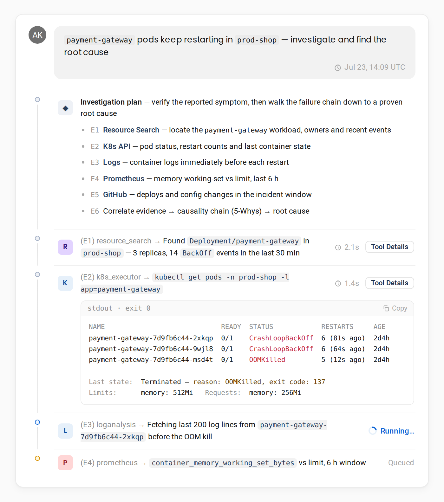
Four stages, every one of them inspectable in source.
The planner reasons step by step against live evidence, batches independent diagnostic steps to run in parallel, and holds several candidate root causes open, testing each as results come back.
Specialist sub-agents run real diagnostic commands through a credential-injected sandbox: kubectl, helm, argocd, the AWS, Azure and gcloud CLIs, PromQL queries, log queries against Loki, Elasticsearch and SigNoz, trace queries against Jaeger, ClickHouse and Chronosphere, plus the full Datadog and New Relic APIs. NudgeBee runs 62 named specialist agents with 116 registered tools. A router agent classifies each query to the right domain agent.
Findings are resolved against a live topology knowledge graph, so the service that is failing is separated from the thing that actually broke. Causal correlation across real dependency edges, not time-window grouping.
Three quality gates before you see an answer. A plan critiquer reviews the investigation plan and can send it back up to three times. A failure-reflection step reasons about why a step failed and pivots instead of blindly retrying. A final-answer critiquer rejects symptom-only answers outright.
NudgeBee keeps a live graph of your environment: services, workloads, nodes, config objects and cloud resources, with the real edges between them. When something breaks, it walks those edges to separate the service that is failing from the thing that actually broke.
In this map, checkout-api is only where the 503s surface. Following the CALLS edge reaches payment-gateway, and the IS_CONFIGURED_BY edge reaches a ConfigMap that changed at 14:02. That config change is the root cause, two hops from the symptom.
The graph carries 61 node types and 37 relationship types, built from four cloud and Kubernetes sources plus five runtime behavioural sources including eBPF and distributed trace spans. It is causal correlation across real dependency edges, not alerts grouped by the minute they fired.
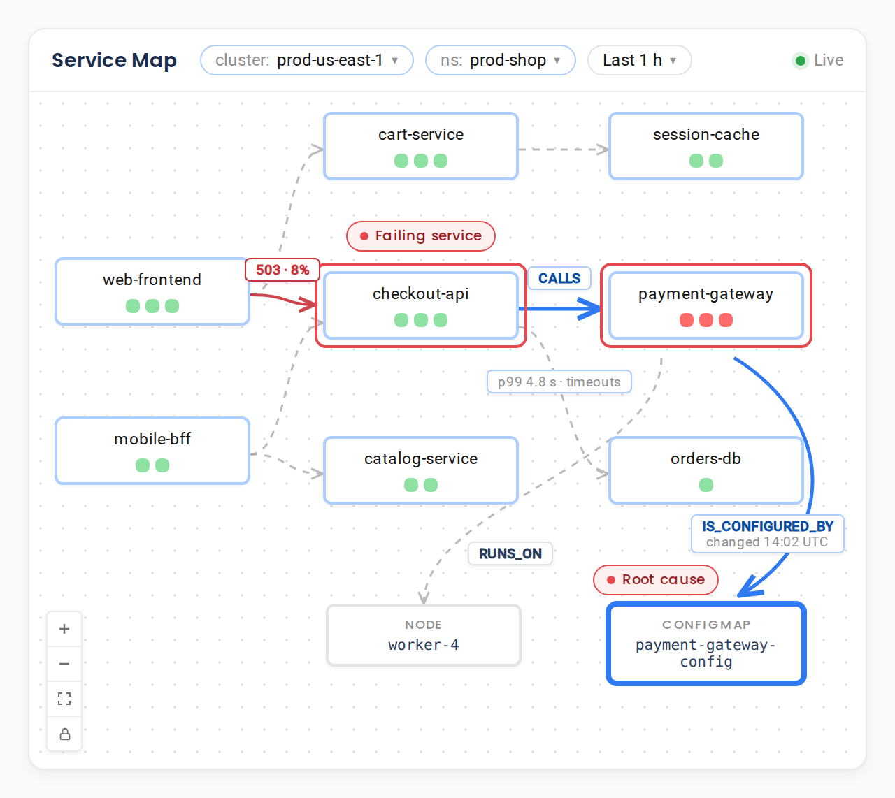
Most AI SRE tools stop at the first thing that looks wrong. NudgeBee is explicitly prevented from doing that. The following are rejected as root causes and cannot be returned as a final answer:
CrashLoopBackOffEvery answer must include a 5-Whys chain, and every link in that chain must carry a [Tool - ID] citation pointing back to the command output that supports it. The final answer also has to explain the literal symptom the engineer reported, not a related one.
NudgeBee is one of several root cause analysis tools; see how it compares.
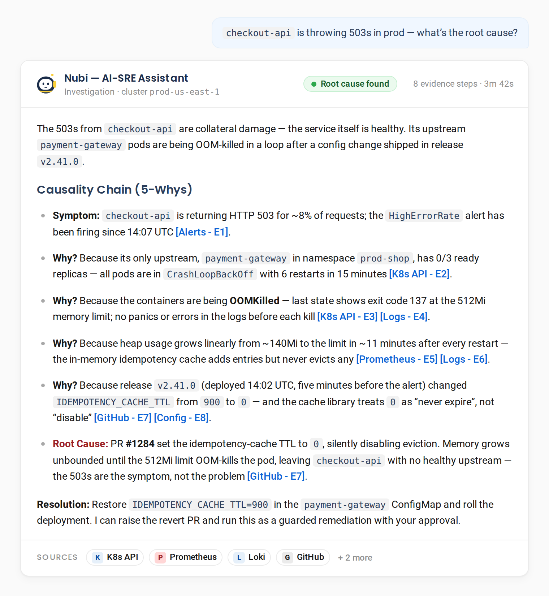
Two modes, drawn at the tool layer, not left to the model's judgement.
NudgeBee does not stop at a root cause. It runs the fix as durable, approval-gated runbook automation, and can heal the routine incidents on a schedule with dry-run and guardrails.
Read-only diagnostics run without asking, so the hunt for a root cause is never slowed by a prompt.
Every create, update and delete is classified at the tool layer and gated behind explicit human approval. Before it applies a change, it scores the blast radius from the live dependency graph and auto-applies only what is safe. Everything else waits for your approval.
The agent is forbidden from modifying IAM or RBAC to grant itself access it lacks.
It never asks you to go and run commands yourself.
All tool output is treated as untrusted input, a deliberate prompt-injection defence.
Most AI incident tools start every investigation from zero. NudgeBee ships an event-sourced memory system with nine layers, spanning your team's preferences, the failure patterns it has already seen, the decisions made previously, and the policies it has to respect.
The effect compounds. An agent that has investigated your checkout service twenty times knows which alerts are noise, which dependency usually fails first, and what the team decided last time. Memory is scoped per tenant and stays inside your own deployment.
NudgeBee correlates a production log line or stack trace back to the exact source line, then to the git commit and its author, using ripgrep and git blame.
In fix mode it goes further. It designs the change and drives it all the way to a pull request you can merge, reworking against a build-verification gate if it has to.
The error location is frequently not where the fix belongs, so tracing continues to the boundary where the fault was actually introduced.
Owner-level deduplication and a 0 to 100 score cut alert fatigue, so on-call incident response starts on the signal that matters.
Crash loops, image-pull backoffs, OOM kills, job failures, CPU throttling and pod-not-ready events collapse into one issue per owning workload, instead of one alert per pod per restart.
Triggers at 92% container and 95% node memory.
Every event gets a 0 to 100 score that accounts for severity, whether the environment is production, duplicate history, SLO impact, anomaly signals, restart counts and config changes. Scores map to P0 at 80 and above, P1 at 60, P2 at 40, P3 below that.
Around 70 named alert types auto-escalate based on how long they have persisted.
Root-cause analysis is written back onto the originating PagerDuty or ZenDuty incident automatically.
NudgeBee queries your existing observability backends in place, in their own native query languages. Metrics, logs and traces are not shipped out to a third party.
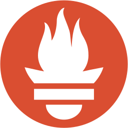
Prometheus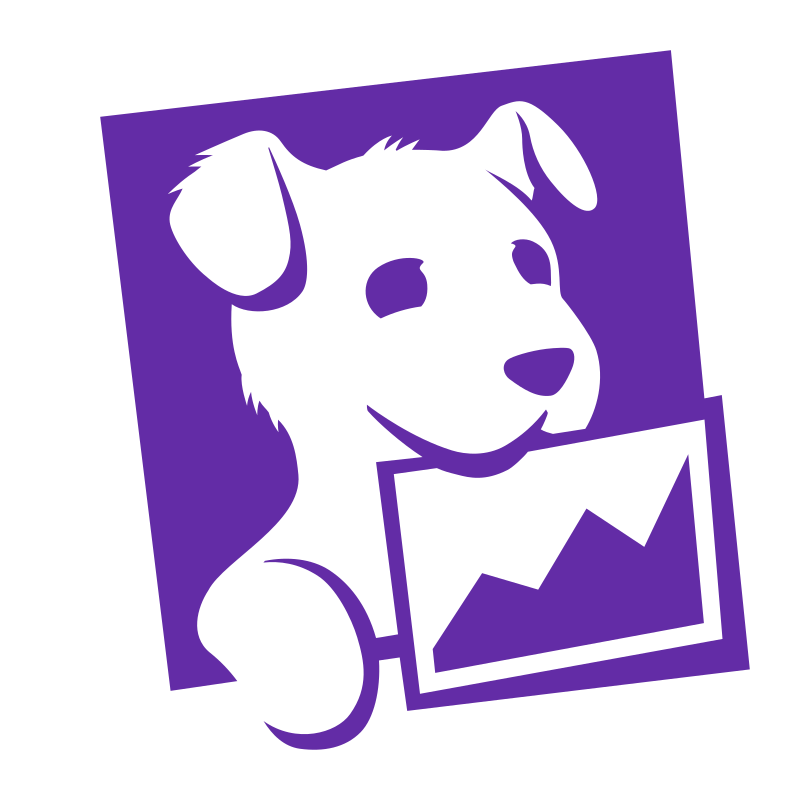
Datadog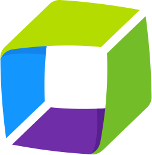
Dynatrace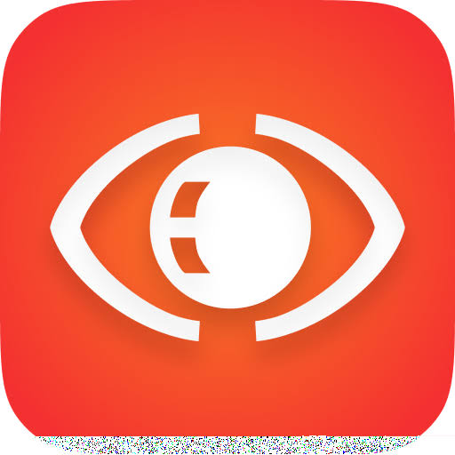
Observe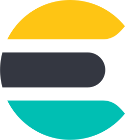
Elasticsearch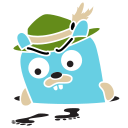
Jaeger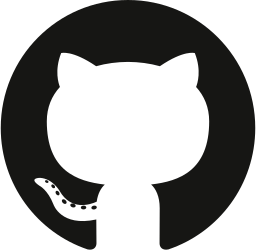
GitHub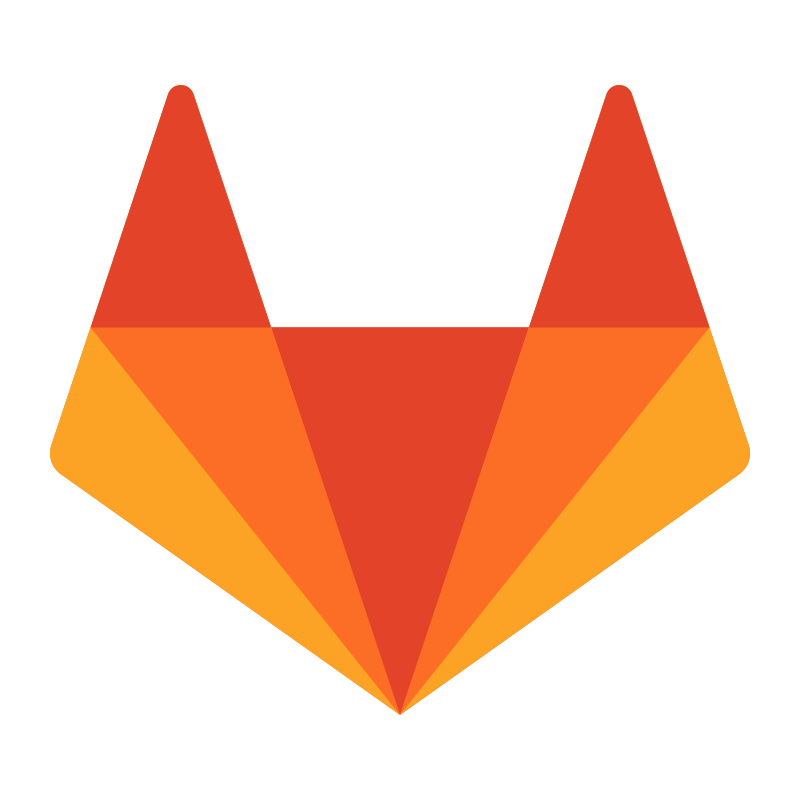
GitLab19 or more observability platforms, queried in native dialects including PromQL, LogQL, KQL, NRQL, Grail DQL, SignalFlow, OPAL and Elasticsearch DSL.
Browse all 78 integrationsRuns inside your own Kubernetes cluster.
Nothing phones home.
The in-cluster agent dials out over a single WebSocket. No inbound ports, no exposed Kubernetes API server, no VPN.
Credentials encrypted at rest with AES-256-GCM. Agent messages signed with Ed25519.
Embeddings can run fully on-device and the model can be self-hosted in your VPC, so air-gapped deployment is viable.
Read the implementation, with a free Community edition.
Outbound AI requests are scanned for secrets before they reach any model, and can be redacted or blocked.
Multicloud complexity does not slow down when your team does. NudgeBee's SRE and AIOps agents absorb routine operations autonomously so our teams focus on high-value engineering. Their extensive library of specialist agents gives Rackspace the building blocks to rapidly create custom agentic workflows at scale.
 Nirmal Ranganathan
CTO, Global Public Cloud, Rackspace
Nirmal Ranganathan
CTO, Global Public Cloud, Rackspace
3,000+ daily alerts correlated into actionable incidents, automated runbooks executed, and 61% of issues resolved without a human ever getting paged.
Read the case studyFeature lists converge fast. What actually separates one of these from another is where it runs, what it is allowed to read, and what it is allowed to change.
Most AI tools for SRE work sit beside the stack and summarise it. Agentic SRE means the agent plans the investigation, runs the diagnostics itself, and has to defend the answer with a cited 5-Whys chain before you ever see it.
NudgeBee runs in your VPC, self-hosted in your own cluster, with zero telemetry. The in-cluster agent dials out over a single WebSocket, so there are no inbound ports and no exposed Kubernetes API server.
Your existing backends, in place, across 19 or more observability platforms in their own query languages. Metrics, logs and traces are not shipped to a third party, and the model stays your choice across eleven provider routes.
Nothing without you. Every create, update and delete is classified at the tool layer and gated behind explicit human approval, delivered in Slack, Teams, Google Chat or a signed link. Approval gates and audit trails cover every change, so nothing ships without a record of who signed off.
For the engineer evaluating it and the security team signing it off.
Book a DemoOne platform, one knowledge graph. Add another assistant with no new install and no re-integration.
Free forever. Self-host at any scale, or run 2 clusters or cloud accounts free on Cloud SaaS. Nothing leaves your environment. No credit card.